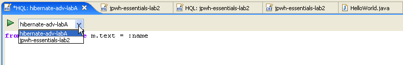
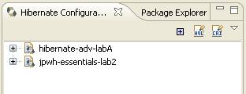

Previous new and noteworthy for 3.1.0.beta7
General |
|
|
Bugfixing |
Another release with more bugfixing and improvements, see JIRA release notes |
Query editing |
|
|
Query toolbar inside Query editor |
The HQL and Criteria editor now has their own toolbar with "Run Query" and a console configuration combobox. Makes it easier to mange the execution of the queries and allow users to quickly change between configurations.
 At the same time you can now hahttp://opensource.atlassian.com/projects/hibernate/browse/HHH-1207ve multiple query editors per console configuration as opposed to before where only one per console configuration were possible. |
|
|
|
|
Open HQL & Criteria editor |
Previously the Open HQL and Criteria buttons were only enabled if a Configuration was selected. They are now always enabled, hopefully making it easier for users to find.  |
Reverse Engineering |
|
|
OracleMetaDataDialect |
Oracle drivers apparently cannot handle large operations via the standard JDBC MetaData API and thus users can risk getting a "Maximum cursors exceeded" even though every resultset from the metadata API is closed. To remedy this we now have a Oracle specific implementation for the reading of database metadata. It is still considered experimental so it is not enabled by default for Oracle. To enable add the following property to your hibernate.properties or hibernate.cfg.xml:
|